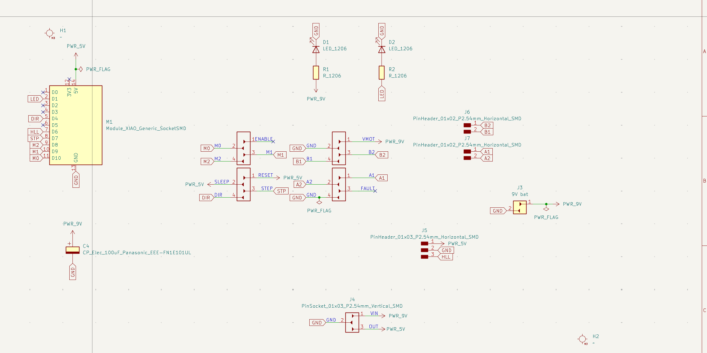
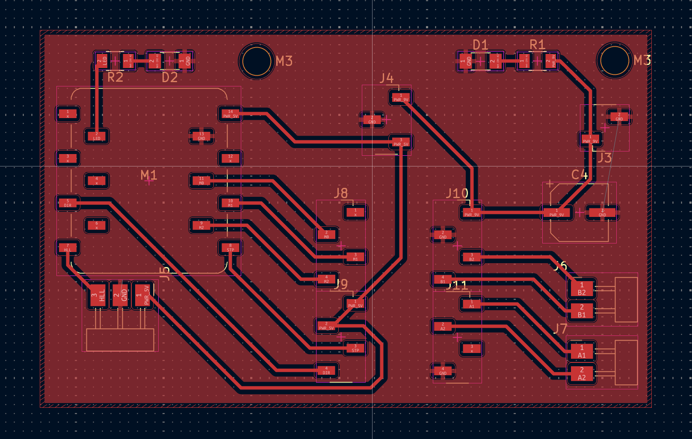
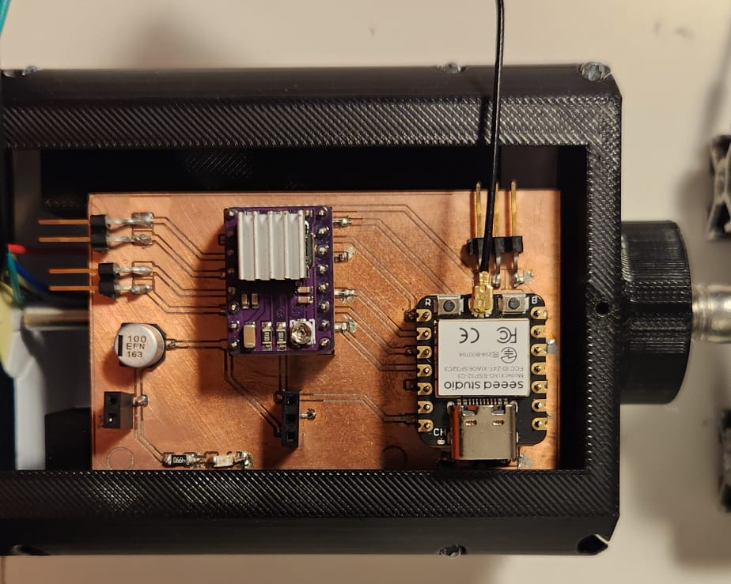

The design and development process of our variable pitch propeller focuses on adapting tubercles on propeller blades to optimize performance. We started by researching the effects of tubercles on blades and their potential impact on propellers. In addition, we investigated the effect of tubercles on variable pitch propellers. To build a variable pitch propeller, we used bevel gears instead of a governor. The bevel gears have a 1 to 4 ratio. Two of the larger bevel gears are connected to the propeller blades, one is connected to our stepper motor, and the other serves as a stabilizing axle. The ratio ensures accurate movement and reduces torque load. We also used 608ZZ bearings for stability, with shafts meeting in an inner housing and an outer housing keeping everything together.
In our first test, the casing of the propeller broke due to the weak structure. We made it thicker and removed cooling holes. The casing now has a slightly outward sloped cylindrical shape, with an octagonal inside to make component attachment easier.
After our second test, the propeller only slightly cracked due to a loose shaft. Vibrations from uneven weight distribution caused the nuts to loosen. To fix this, we plan to balance the propeller and add a large ball bearing for smoother spinning.


